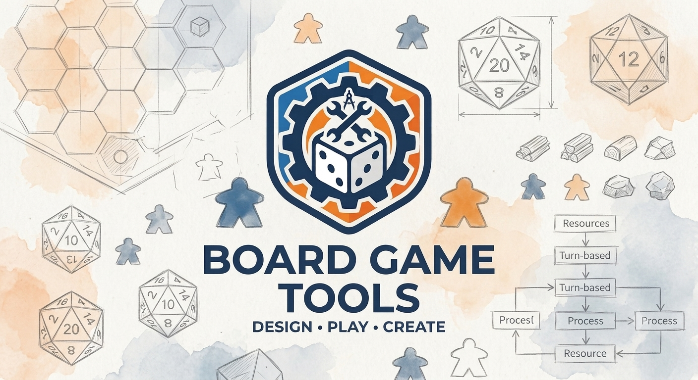
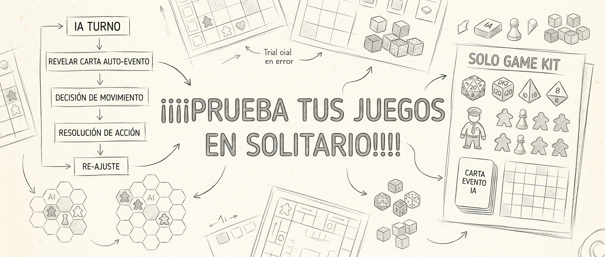
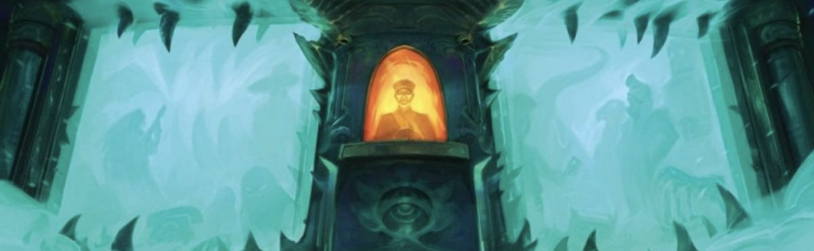
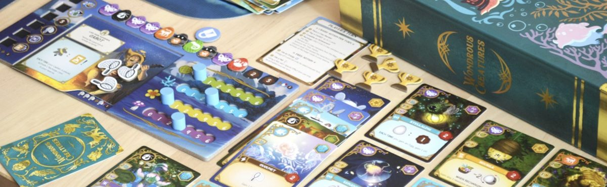
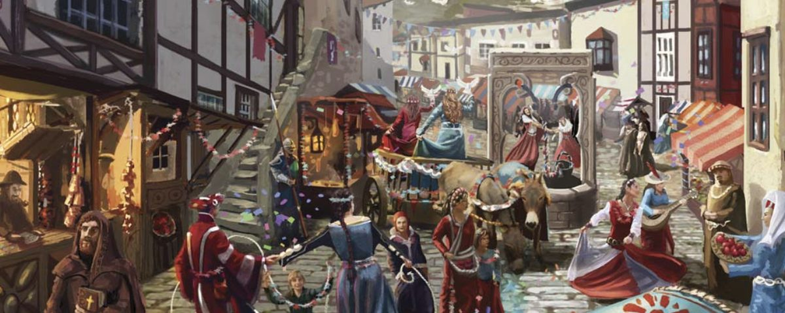
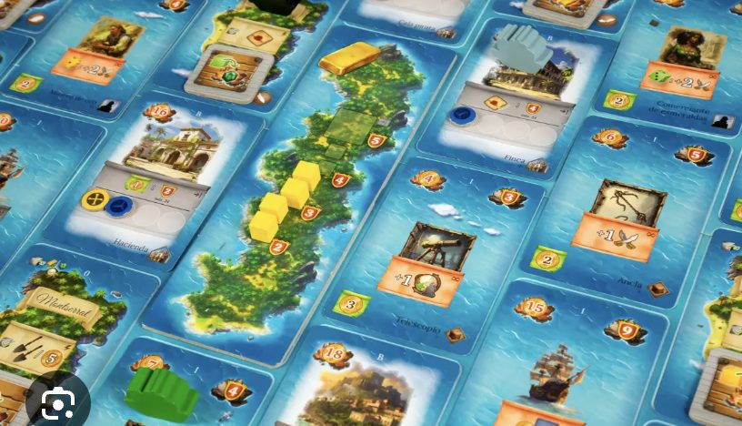
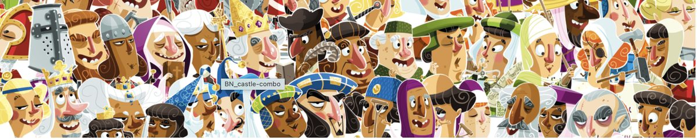
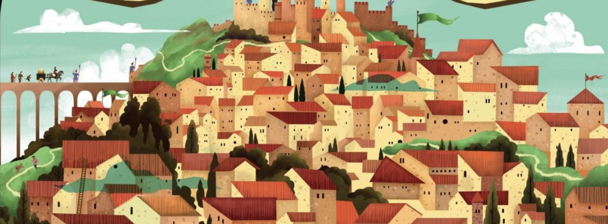
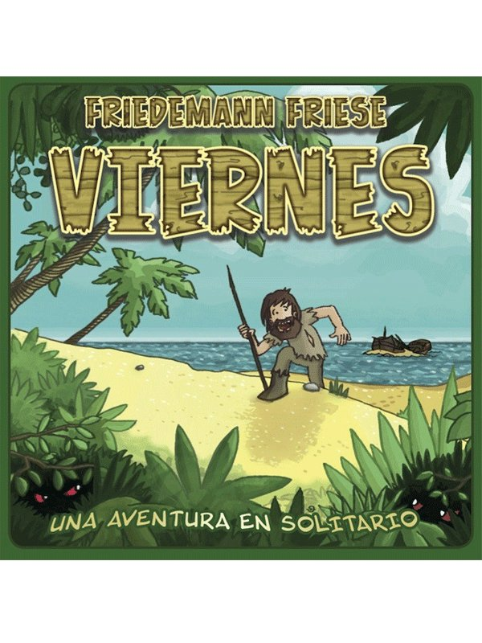

¿Sin rival? No hay problema. BGT añade bots, automas, a tus juegos favoritos para que puedas jugar en solitario ayudando a gestionar los rivales.
Recopilación de automas fan-made para jugar en solitario — todo en una app.
Prueba tus juegos en solitario con automas fanmade u oficiales.
Un APK gratuito para Android. Sin tienda, sin suscripción, sin anuncios. Instala y listo.
Selecciona uno de los 8 juegos soportados. Cada uno tiene su propio bot con comportamiento fiel a las reglas.
El automa gestiona su turno solo. Tú juegas el tuyo. Sin necesidad de un segundo jugador.

¿No está el tuyo? Pídelo a la comunidad y lo añadimos — la biblioteca crece con los votos de los jugadores.

Enfréntate al robot asesino del cine: tres mazos de programa (A→B→C) que se ejecutan cada turno de forma automática.

Un rival artificial con tracker propio de zonas y puntuación. Roba cartas, ocupa zonas y compite contigo hasta el recuento final.

El mercader automático que recorre Europa: mazo de decisiones propio para jugar el modo solitario sin gestionar tú al rival.

Un pirata automático que navega el Caribe por ti: gestiona su ruta y sus acciones para que solo te preocupes de tu turno.

El rival automático para el modo solitario: elige cartas, construye su castillo y puntúa contra ti.

Automatiza al rival en la ciudad universitaria portuguesa: dados, influencia y viajes gestionados por la app.
Introduce tus cartas de fauna y hábitats y obtén el desglose completo de puntos al instante, para cualquier número de jugadores.

Asistente para el clásico solitario de Friedemann Friese: gestiona fases, peligros y puntuación de tu aventura con Robinson.
Cuéntanos qué juego quieres ver en BGT y entrará en la cola de la comunidad.
BGT es gratis, sin anuncios y lo desarrollo en los ratos libres — que con un bebé en casa no son muchos. Si la app te ha ahorrado una partida frustrada, cada aportación va directa a mantener los bots y pagar pañales.
BGT crece gracias a sus usuarios. Desde la propia app puedes aportar contenido y ayudar a mejorarla, sin salir de la partida.
¿Falta una carta o un componente de tu juego? Hazle una foto desde la app y súbela directamente. Así se completan los mazos de los bots.
Sugerencias, erratas en reglas o fallos del bot: repórtalos con dos toques desde la propia app. Todo aporte cuenta.
Los aportes se procesan con agentes de IA que corren en local: leen las fotos, clasifican el feedback y preparan las mejoras para la siguiente versión.
/juego_nuevo para pedir un juego, /modificar para reportar un fallo en uno ya implementado, /update para la última versión. Todo con conversación guiada, sin formularios.
Debate reglas, comparte automas alternativos y sube archivos directamente. Nuestros agentes leen el foro y lo incorporan al desarrollo.
Abrir el foro¿Quieres un bot para un juego nuevo, has encontrado un fallo en uno ya implementado, o conoces un automa alternativo? Elige qué es y cuéntanoslo con detalle.
La app crece con cada versión. Aquí tienes lo más reciente.
Cada partida solitaria que hayas podido jugar gracias a BGT es un motivo más. Ayúdame a seguir añadiendo juegos y mantener los bots en marcha.